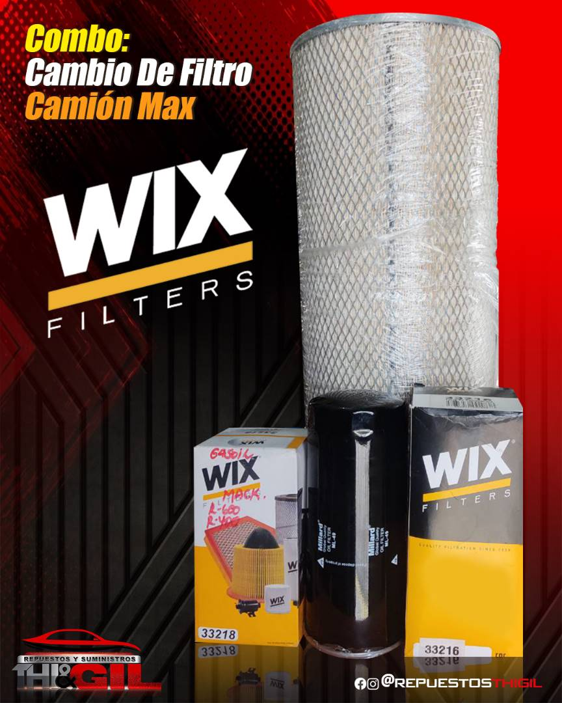
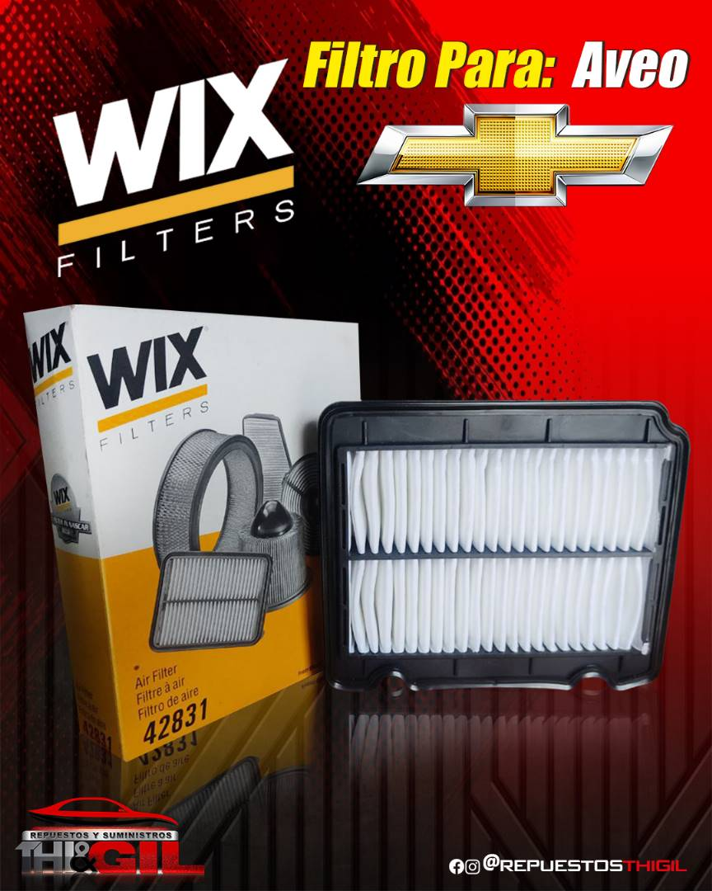
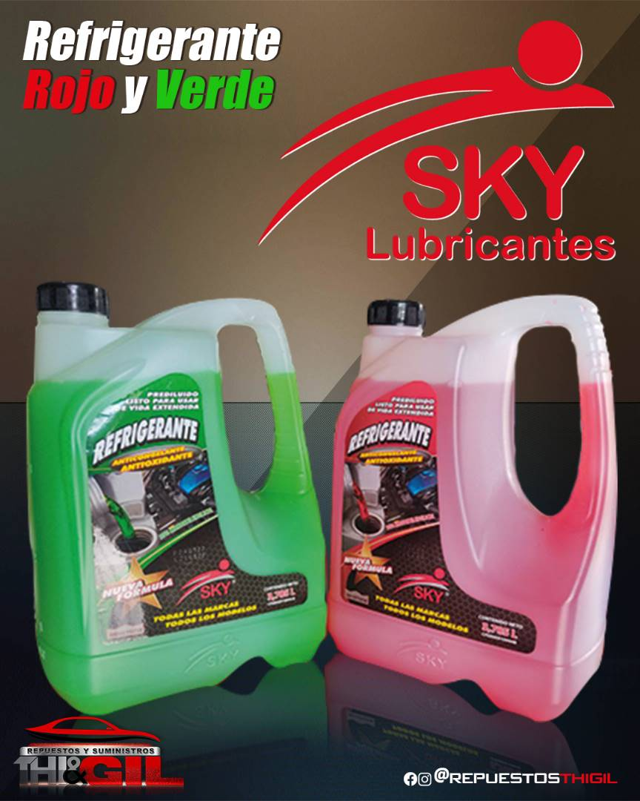
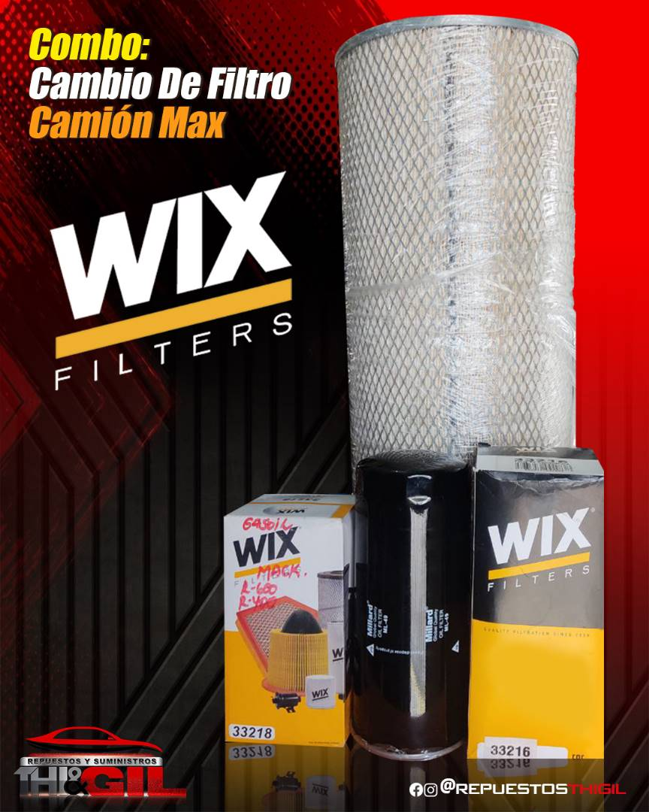
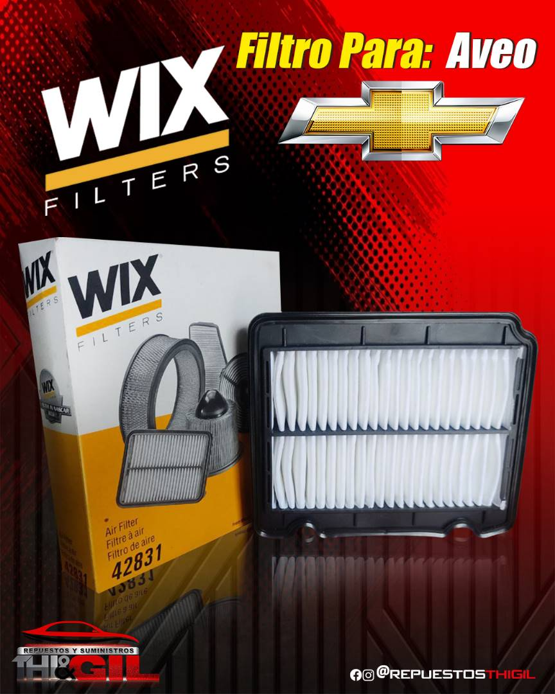
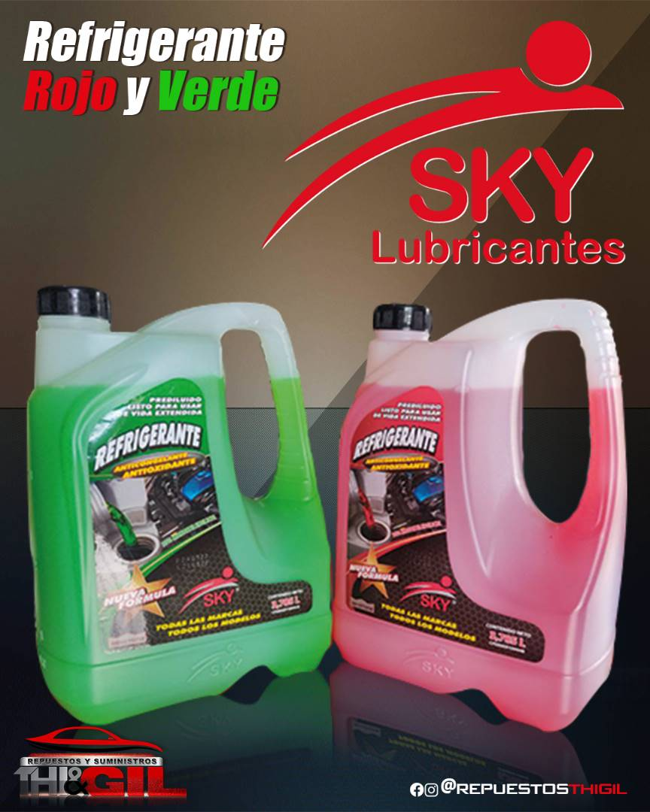

Bienvenidos a Repuestos y Suministros THI-GIL C.A.
Nos enorgullece ofrecer la solución definitiva para el mantenimiento de tu vehículo. Nos dedicamos a proporcionar filtros, aceites y lubricantes de la más alta calidad, diseñados para mantener su automóvil o motocicleta funcionando de manera óptima.
Nuestro Compromiso con la Calidad de siempre En cada producto que ofrecemos, nos esforzamos por superar las expectativas. Nuestros filtros están fabricados con materiales de primera calidad, asegurando una filtración eficiente y la protección del motor contra impurezas. Los aceites y lubricantes que llevamos son formulados con la más avanzada tecnología para garantizar un rendimiento óptimo y duradero.